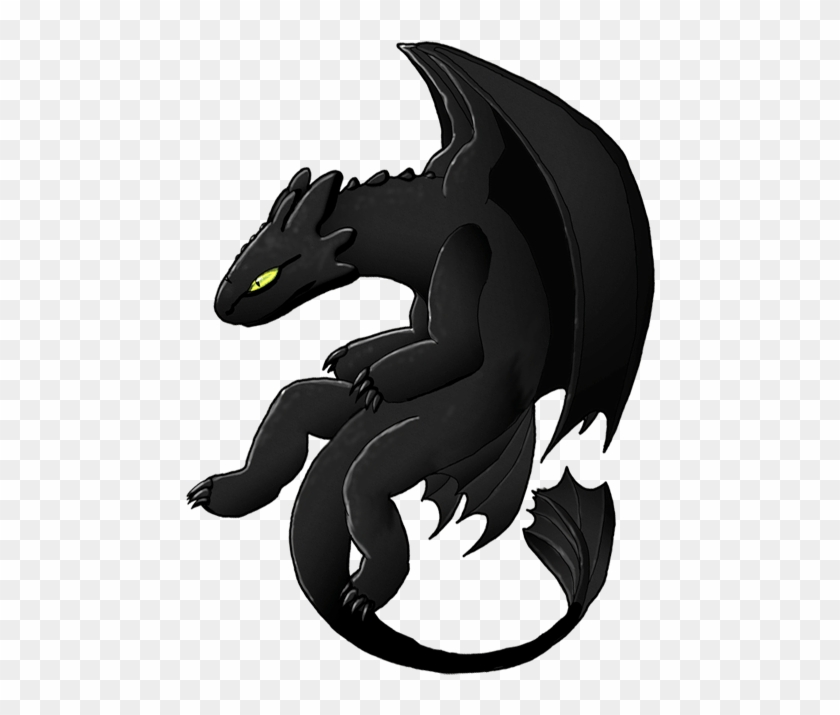

Hyperblog
Tu blog de confianza
Este es el tí tulo interesante y atractivo del post
Y este es el parrafo de inicio donde vamos a explicar las cosas increíbles que se pueden hacer con ramas


Los blogs son la mejor forma de compartir ideas. Mucho más que ir a conferencias o ver videos de youtube. blablalblabla. Esto sera otra cosa que no debería de generar problemas